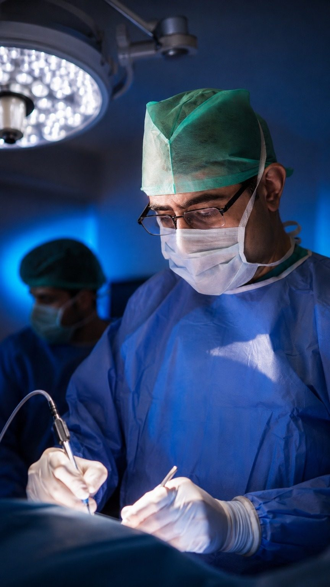
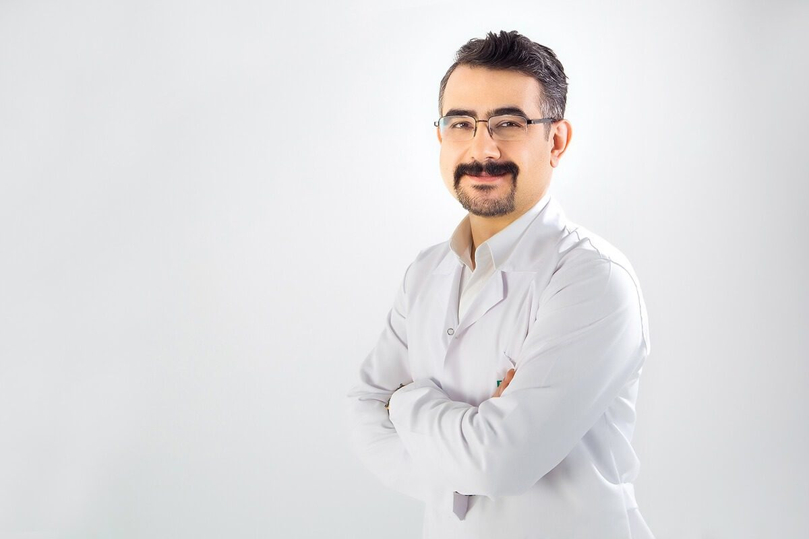
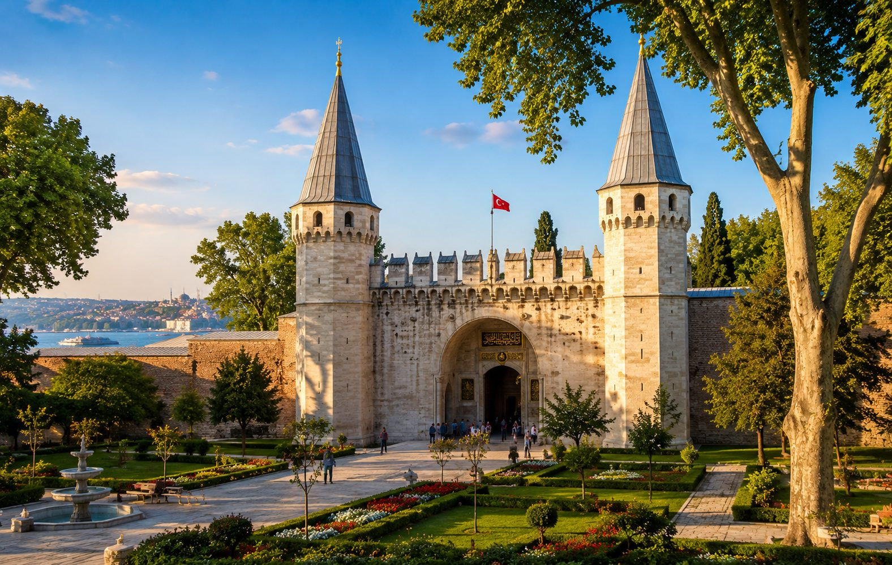
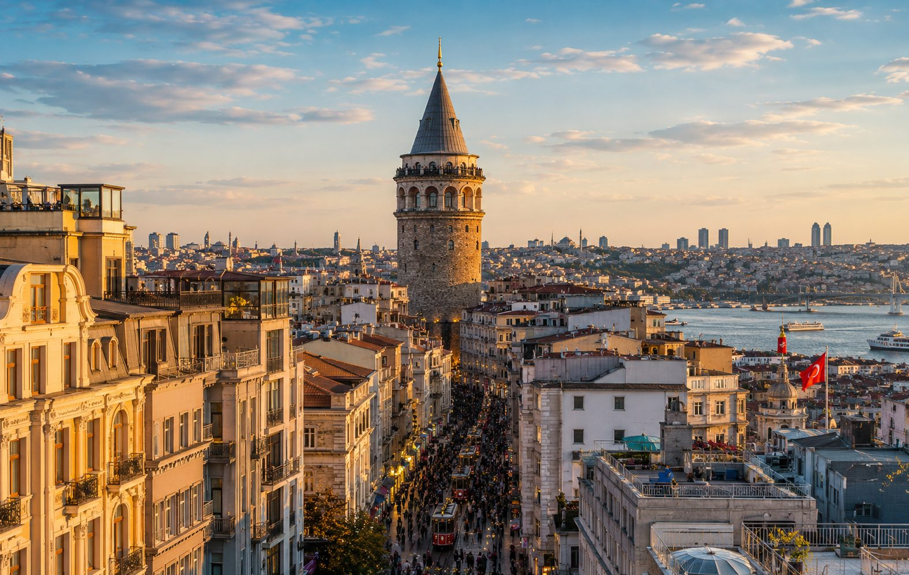
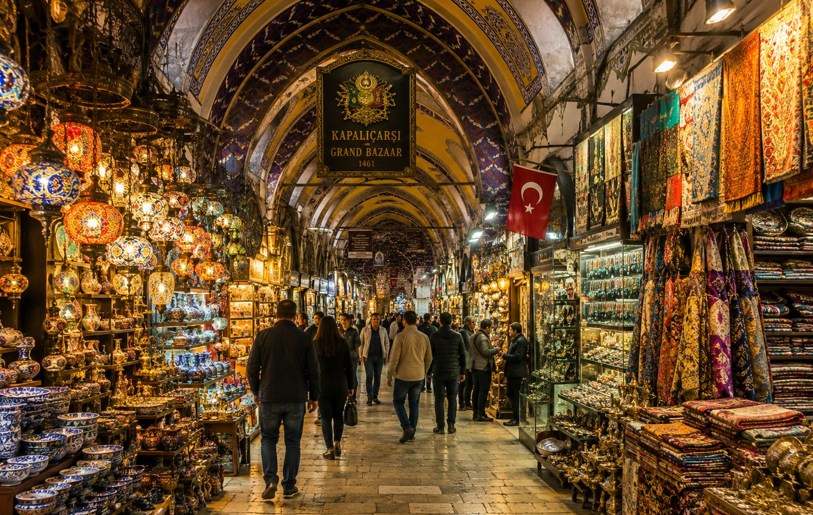
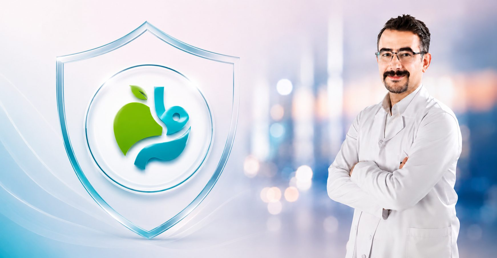
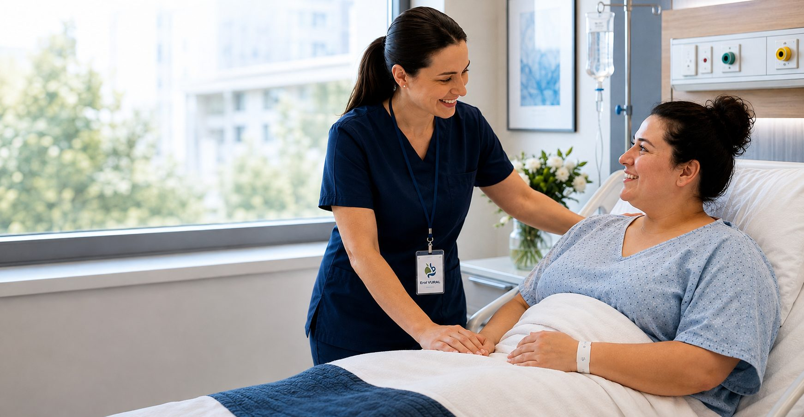
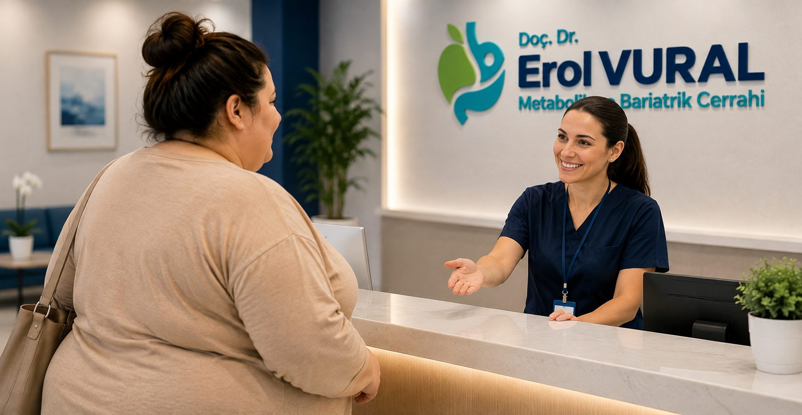
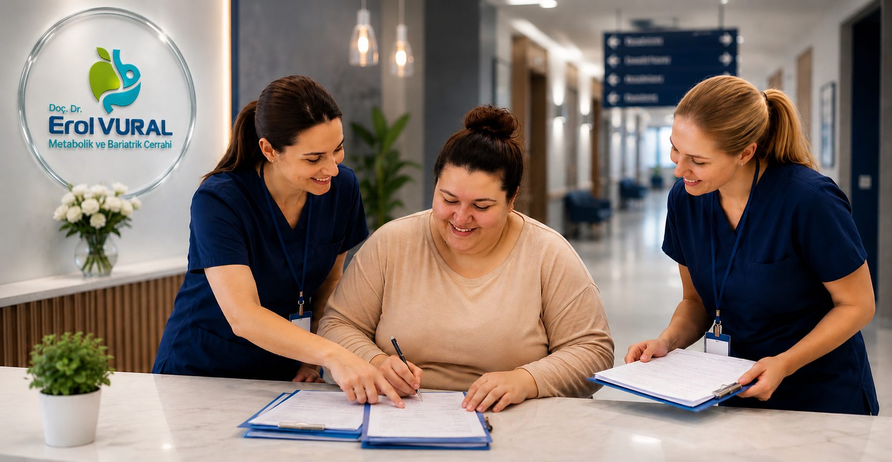
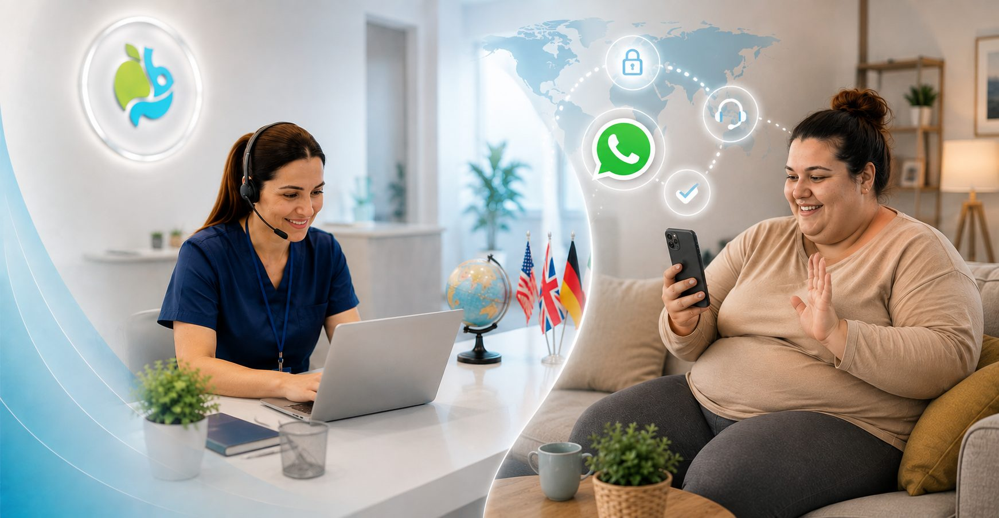

01
Erstberatung online
In der ersten Beratung werden die geplante Behandlung, Ihr allgemeiner Gesundheitszustand und Ihre Erwartungen besprochen. Fragen können geklärt und notwendige Informationen vor der Reise zusammengestellt werden.
Wenn Sie für eine Adipositas- oder metabolische Behandlung in die Türkei reisen möchten, können Sie den gesamten Ablauf von der ersten Beratung und medizinischen Beurteilung bis zur Rückreise und langfristigen Nachsorge nachvollziehen.
Informationen zur Behandlung
Für internationale Patienten besteht der Prozess nicht nur aus dem Operationstag. Medizinische Beurteilung, Reiseplanung, Klinik, Erholung und Nachsorge werden gemeinsam betrachtet.
In der ersten Beratung werden die geplante Behandlung, Ihr allgemeiner Gesundheitszustand und Ihre Erwartungen besprochen. Fragen können geklärt und notwendige Informationen vor der Reise zusammengestellt werden.
Angaben wie Größe, Gewicht, Alter, Vorerkrankungen, Medikamente und frühere Operationen werden beurteilt. Erforderliche Befunde können über einen sicheren Weg übermittelt werden.
Operative und nichtoperative Möglichkeiten werden individuell anhand der Krankengeschichte, Körpermaße und Begleiterkrankungen betrachtet. Eine endgültige Operationsentscheidung erfolgt nicht allein online.
Flug- und Ankunftsplanung werden mit dem klinischen Ablauf abgestimmt. Unterkunft und Transfers werden nur berücksichtigt, soweit sie für den geplanten Ablauf erforderlich sind.
Nach Aufnahme, Untersuchung, erforderlichen Voruntersuchungen und Anästhesiebeurteilung wird die medizinisch geeignete Behandlung durchgeführt.
Nach der Operation werden klinische Überwachung, Ernährung, Mobilität und Medikamentenempfehlungen überprüft. Die Entlassung richtet sich nach dem individuellen Genesungsverlauf.
Die Reisefähigkeit wird abhängig von der Erholung beurteilt. Empfehlungen und erforderliche Unterlagen für die weitere Betreuung werden vor der Rückreise besprochen.
Nach bariatrischen Eingriffen kann eine langfristige Kontrolle erforderlich sein. Gewicht, Ernährung, Vitamin- und Mineralstoffversorgung sowie Begleiterkrankungen können überwacht werden.

Doç. Dr. Erol Vural ist im Bereich der chirurgischen Behandlung von Adipositas und metabolischen Erkrankungen tätig. Bei internationalen Patienten stehen eine angemessene Beurteilung, klare Kommunikation und medizinisch begründete Entscheidungen im Mittelpunkt.
Nicht jede Methode ist für jeden Patienten geeignet. Die folgenden Informationen dienen der allgemeinen Orientierung; die endgültige Auswahl erfolgt nach klinischer Beurteilung.
Ein chirurgisches Verfahren, bei dem das Magenvolumen reduziert wird. Die Eignung wird anhand von Körpermaßen, Gesundheitszustand und weiteren klinischen Faktoren beurteilt.
Ein bariatrischer Eingriff mit chirurgischen Veränderungen an Magen und Darm. Auswahl und Nachsorge richten sich nach der individuellen Situation.
Chirurgische Behandlungsmöglichkeiten können bei geeigneten Patienten mit Typ-2-Diabetes und anderen metabolischen Erkrankungen geprüft werden.
Kann bei klinischen Problemen nach einer früheren bariatrischen Operation oder bei notwendiger erneuter Beurteilung in Betracht kommen.
Nichtoperative Möglichkeiten zur Gewichtskontrolle können abhängig von Gesundheitszustand und individuellen Zielen geprüft werden.
Es gibt keine einzelne Methode, die für alle Menschen geeignet ist. Die Übersicht beschreibt nur die grundlegenden Ansätze.
| Methode | Grundprinzip | Beurteilung |
|---|---|---|
| Schlauchmagen | Reduktion des Magenvolumens | Klinische Beurteilung |
| Magenbypass | Chirurgische Veränderungen an Magen und Darm | Klinische Beurteilung |
| Metabolische Chirurgie | Chirurgische Beurteilung metabolischer Erkrankungen | Individuell |
| Andere Möglichkeiten | Unterschiedliche Ansätze je nach Patient | Individuell |
Wenn die nach der Erstberatung benötigten Informationen und die Reisevorbereitung frühzeitig geklärt werden, kann der Ablauf besser organisiert werden.
Bei internationalen Patienten werden klinische und organisatorische Planung gemeinsam betrachtet. Flughafen, Unterkunft, Klinik und Untersuchung können je nach Situation variieren.
Ankunft über internationale Verkehrspunkte wie den Flughafen Istanbul im Zusammenhang mit dem klinischen Zeitplan.
Eine für Ruhe und Klinikbesuche geeignete Unterkunft kann nach Bedarf berücksichtigt werden.
Die zuständige Gesundheitseinrichtung wird zur geplanten Beurteilung und Behandlung aufgesucht.
Vor einer Operation erfolgen persönliche Beurteilung und notwendige Untersuchungen.
Der geplante Eingriff wird durchgeführt, wenn er medizinisch geeignet und indiziert ist.
Der Operationstag umfasst mehrere klinische Schritte – von der Aufnahme und präoperativen Beurteilung bis zur Anästhesie und postoperativen Überwachung.
Identität und geplanter Ablauf werden bestätigt; anschließend erfolgt die Weiterleitung an die zuständigen Bereiche.
Notwendige Untersuchungen und Tests werden entsprechend der klinischen Situation durchgeführt.
Die erforderliche anästhesiologische Beurteilung und Vorbereitung werden abgeschlossen.
Der geplante chirurgische Eingriff wird durchgeführt, wenn er medizinisch geeignet ist.
Klinischer Zustand, Schmerzen, Ernährung, Mobilität und weitere relevante Parameter werden überwacht.
Die postoperative Phase ist ein wichtiger Teil der Behandlung. In den ersten Tagen stehen klinische Überwachung und Ernährung im Vordergrund; Mobilität, Vitamin- und Mineralstoffversorgung sowie Kontrolltermine werden individuell angepasst.
Klinische Überwachung und Beurteilung der Genesung.
Einhaltung des postoperativen Ernährungsplans nach Empfehlung des Behandlungsteams.
Sichere und schrittweise Mobilisierung nach klinischer Empfehlung.
Geplante klinische Nachsorge und erforderliche Untersuchungen fortführen.
Nach bariatrischen Eingriffen kann eine langfristige Nachsorge erforderlich sein. Nach der Rückkehr sollten Gewicht, Ernährung, Vitamin- und Mineralstoffversorgung sowie Begleiterkrankungen weiter kontrolliert werden. Wenn sinnvoll, können Operationsbericht und Nachsorgeempfehlungen mit dem behandelnden Team vor Ort geteilt werden.
Wenn es der Behandlungsplan erlaubt, kann Istanbul neben dem Aufenthalt auch wegen seines historischen und kulturellen Erbes erkundet werden. Die Aktivitäten sollten an den Gesundheitszustand angepasst werden.
Die Hagia Sophia spiegelt viele Schichten der Geschichte Istanbuls wider und bewahrt Spuren verschiedener Epochen.
Die Moschee am Sultanahmet-Platz wurde im frühen 17. Jahrhundert unter Sultan Ahmed I. errichtet.

Der Topkapı-Palast war über lange Zeit ein wichtiges Verwaltungszentrum der osmanischen Dynastie.

Historische Straßen und das Stadtbild von Galata und Beyoğlu gehören zu den markanten Bereichen Istanbuls.
Der Bosporus verbindet die beiden Ufer Istanbuls und trennt zugleich Europa und Asien.

Der Große Basar gehört zu den historischen Handelszentren Istanbuls und vermittelt traditionelle Basarkultur.
Bilder realer Patienten dürfen nur mit ausdrücklicher Einwilligung und im Einklang mit den geltenden Regeln veröffentlicht werden. Bilder stellen kein bestimmtes Behandlungsergebnis dar; Datum und Einwilligung müssen vor einer Veröffentlichung geprüft werden.
Hinweis: Vor der Veröffentlichung von Patientenbildern müssen Einwilligung, Eingriffs- und Bilddaten sowie die Einhaltung der geltenden Vorschriften geprüft werden.
Bei einer Behandlung im Ausland sollten neben dem erwarteten Ergebnis auch Arzt, Gesundheitseinrichtung, medizinische Beurteilung, Kommunikation und Nachsorge berücksichtigt werden.

Berufliche Identität und Fachgebiet werden klar angegeben.

Die Auswahl der Behandlung basiert auf einer individuellen klinischen Beurteilung.

Ablauf, Leistungsumfang und klinische Unsicherheiten werden verständlich erklärt.

Untersuchung, Tests, Operation und Nachsorge werden nachvollziehbar erläutert.
Der Bedarf an Kontrollen nach der Behandlung wird berücksichtigt.

Internationale Patienten sollen ihre Fragen sicher und geordnet stellen können.
Die Erstberatung und Prüfung vorhandener Unterlagen kann aus der Ferne beginnen. Vor einer endgültigen Operationsentscheidung kann eine persönliche klinische Untersuchung erforderlich sein.
Eine einheitliche Aufenthaltsdauer gibt es nicht. Sie hängt von Untersuchungen, Operation, Erholung und klinischen Empfehlungen ab.
Es gibt keinen einheitlichen Flugtermin. Die Reisefähigkeit sollte anhand des individuellen Genesungsverlaufs beurteilt werden.
Die für eine erste Beurteilung benötigten Grundinformationen können übermittelt werden. Ausführliche medizinische Unterlagen sollten möglichst über einen sicheren Kanal geteilt werden.
Die Entscheidung sollte nicht auf einer einzelnen Information aus dem Internet beruhen. Krankengeschichte, Körpermaße, Begleiterkrankungen und klinische Beurteilung werden gemeinsam betrachtet.
Bei dringenden Beschwerden sollten Sie am Aufenthaltsort medizinische Notfallhilfe in Anspruch nehmen und das Behandlungsteam möglichst schnell kontaktieren.
Teilen Sie Ihren Namen, Ihr Land und Ihre Kontaktdaten. Senden Sie keine ausführlichen medizinischen Unterlagen über ein offenes Formular; das Team kann erklären, wie erforderliche Dokumente sicher übermittelt werden.
Ihre Anfrage wurde erfolgreich übermittelt. Das medizinische Team wird Ihre Angaben prüfen und sich so bald wie möglich bei Ihnen melden.
Informationen über WhatsAppDie Anfrage konnte nicht gesendet werden. Bitte versuchen Sie es erneut oder kontaktieren Sie uns über WhatsApp.
Gesundheitsdaten sind besonders schützenswerte personenbezogene Daten. Senden Sie keine ausführlichen medizinischen Unterlagen über offene Kommunikationskanäle.